Overview
The Dynaform designer offers two different controls to manage options with checkable boxes; checkbox and checkgroup controls.
Checkbox
A checkbox offers a binary on/off choice and appears as a square box with a checkmark when marked. Checkboxes are convenient for allowing a user to select only one option with a single click of the mouse. Its icon in the toolbar of the Dynaform designer is the following:

The default appearance of a checkbox field is the following:
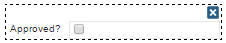
Note: Notice that only one box representing a yes/no option is available when working with a checkbox control.
When running a case, a Checkbox control looks similar to the image below when the Dynaform is rendered:
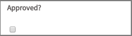
Managing Checkboxes
After adding a checkbox to the Dynaform, it is possible to customize its functionality and behavior using the properties panel.
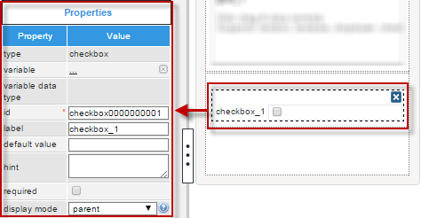
The properties set by default are the following:
- type: Set to "
checkbox" by default. This property cannot be modified. - id: Set to "
checkbox 000000000X" by default, where "X" represents the corresponding number of the control in the design. This numbering starts at 1. After a variable is related to this control, the ID changes to the name of the variable. Nevertheless, it is possible to set a new ID for the control. - label: Set to "
checkbox _X" by default, where "X" represents the corresponding number of the control in the design. This numbering starts at 1. - display mode: Set to "
parent" by default. See this documentation for more information about the display modes available for this control.
Checkbox Properties
The properties related to this web control are the following:
| Property | Description |
|---|---|
| Type | checkbox (read-only) |
| Variable | Click on the ... option to select a variable from the list of available variables. See this section to learn more about how to relate a variable to a control.
When a variable is not related to this control, the values returned are:
|
| Variable Data Type | After a variable has been related to the control, this property shows the data type of the variable (readonly). |
| ID | [Required] Field and HTML unique identifier. |
| Label | Set the label of the control in this property |
| Default value | The value saved to the control's variable when the end user does not mark an option. When the form is first
rendered, the value set is "null". If the field is not required and the user does not mark an option,
the value retrieved will also be "null". Thus, the data saved will be the default value for this control
in these cases.
See this documentation to learn how the default value works in this control. |
| Hint | Used to show help when the checkbox is rendered. It is shown when the pointer of the mouse is hovered over the ? icon. |
| Required | By checking this option, an asterisk is added to the label to indicate that the field is required. When a required field is not filled in a value, it is not possible to go to the next step. |
| Display Mode | [Required] Display mode:
|
| Options | The Options property displays the options defined in the related boolean variable. If the checkbox is not related to a boolean variable, this property is not displayed. |
Checkbox Control Example
For this example, add a Checkbox control by simply dragging and dropping it onto the Dynaform designer.

After adding the control the Create Variable window will appear. Create a variable named "married" and configure the settings as seen in the image below.
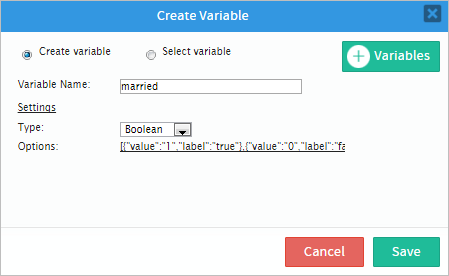
When a variable is added the "variable" and "variable data type" properties will change. The ID property will change to the name of the variable as well, as in the image below.

The label property of the control can be changed to give it a proper name instead of "label_1". For this example, label the property will be changed to "Married:"
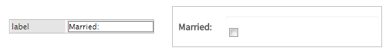
It is not recommended to add text to the default value property because the control field does not show text.

The next property is called "hint", which will be used to show a help message to the user by adding an icon that displays the text added in the property. For example, the hint can be the following text: "Check if married". When running a case, the hint will appear when the pointer of the mouse is hovered over the icon next to the control, as seen in the image below.
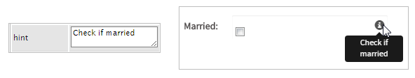
Next is the required property, which adds a red asterisk next to the name of the control. If enabled, then the checkbox must be selected, and if it's not, then an error message will appear as observed in the image.

Now the next property, which is the display mode property, will make the following alterations to the control.

Observe that for this example the options property already has values, because when the variable was created it was boolean and therefore its values were added directly from the variable. For more information about the option property read this documentation.
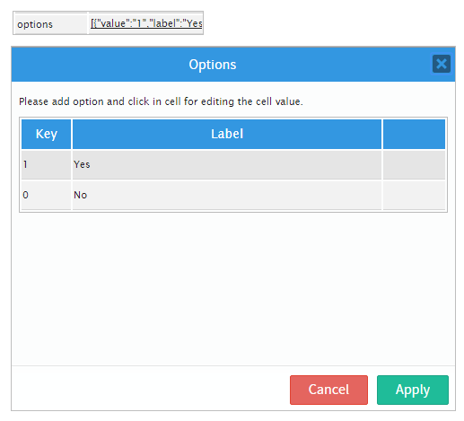
Accessing a Checkbox with PHP
When a checkbox in a Dynaform is submitted, its associated variable has a value of array(1) if marked or array(0) if unmarked. For example, the following trigger code checks whether a checkbox associated with the "hasContract" variable is marked to set the minimum amount in the @#minimumInvoice variable.
By default, the label variable for checkboxes is set to "true" if marked or "false" if unmarked, however, this value can be customized in the options property of the checkbox. For example, the above trigger could be written as:
if (isset(@@hasContract_label) and @@hasContract_label == 'true') {
@#minimumInvoice = 1000.00;
}
else { //if unmarked:
@#minimumInvoice = 200.00;
}
To set the value of a checkbox in a trigger, set its associated variable to a value of array(1) or true to mark it or a value of array(0) or false to unmark it. The following trigger marks a checkbox associated with the hasContract variable in a trigger fired before the Dynaform that holds the checkbox:
Checkgroup
A checkgroup offers an yes/no choice for one or more options in a Dynaform, and appears as one or several square boxes with a checkmark when selected (marked). Checkgroups are convenient for allowing a user to select more than one option with a single click of the mouse. Its icon in the toolbar of the Dynaform designer is the following:
The default appearance of a checkgroup is the following:

When running a case it looks similar to:
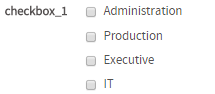
Managing Checkgroups
After adding a checkgroup to the design, it is possible to customize its functionality and behavior by configuring its properties.
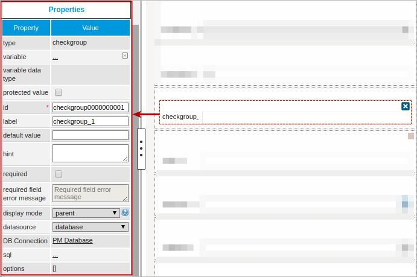
The properties set by default are the following:
- type: Set to "
checkgroup" by default. This property can not be modified. id: Set to "
checkgroup000000000X" by default, where "X" represents the corresponding number of the control in the design. This numbering starts at 1. After a variable is related to this control, the ID changes to the name of the variable; nevertheless it is possible to give a new ID to the control.- label: Set to "
checkgroup_X" by default, where "X" represents the corresponding number of the control in the design. This numbering starts at 1. - display mode: Set to "
parent" by default. See this documentation for more information about the display modes available for this control. - datasource Set by default as "
database". See this documentation for more information of the data source available for this control. -
DB connection: Set to "
PM Database" by default. Take into account that if no SQL query is defined in the sql property, then the database will not be queried. Also, when a variable is related to a control and has its own connection to a database (an external database or the ProcessMaker's workflow database), this property inherits the variable's connection.Note: The * identifier is not supported in SQL queries.
Checkgroup Properties
The properties related to this control are the following:
| Property | Description |
|---|---|
| Type | checkgroup (readonly) |
| Variable | Click on the ... option to select a variable from the list of available variables. See this section to learn more about how to relate a variable to a control.
|
| Variable Data type | After a variable has been related to the control, this property shows the data type of the variable (readonly). |
| Protected Value | By checking this option, the information stored in variables is protected. |
| ID | [Required] Field and HTML unique identifier. |
| Label | Set the label of the control in this property |
| Default value | The value saved to the control's variable when the end user does not mark an option. To set more than one option in this control use a pipe. For example, to define that "Bolivia", "Argentina" and "Venezuela" should be the default countries, set “BO|AR|VE” as the default value. Take a look at this documentation to learn how checkgroups work with default values. |
| Hint | Used to show help when the checkgroup is rendered. It is shown when the pointer of the mouse is hovered over the ? icon. |
| Required | By checking this option, an asterisk is added to the label to indicate that the field is required. When a required field is not filled in a value, it is not possible to go to the next step. As of ProcessMaker 3.2.2, if the Required property is checked, a second property the required field error message is enabled to fill in a customized message.
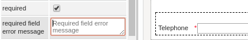 |
| Display Mode | [Required] Display mode:
|
| Datasource | The data source for the list of available options:
|
| DB Connection | To store a value retrieved from a database, select the database connection that will be used (the connection must already be created in the process, see this section to learn more about it). |
| SQL | Insert the SQL query needed to populate the option of the control with data from the database.
Take a look at this documentation to learn how this property works in the designer. Acording to your ProcessMaker version, read the following sections to learn about how this control manages the values retrieved by a SQL query: |
| Data Variable | Assign the array variable using the @@ button.
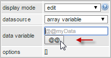 |
| Options | Define the options that the user will be able to select from in this property. Take into account that if the options are first defined in the designer and then a variable is related to the control, the options will be replaced by the options defined in the variable (the options will be deleted even if the variable has no pre-defined options) . After a variable has been related to the control, it is possible to manually add more variables to the control by defining them in this property, even if the variable has a SQL query defined or variables inside its configuration. Take a look at this documentation to learn how this option works in the designer. |
Checkgroup Control Example
For this example, add a Checkgroup control by dragging and dropping the control onto the Dynaform Designer.
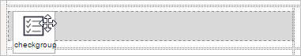
After adding the control a window will immediately pop up. This is the Create Variable window, which allows the user to create variables or select an already existing variable. Create a variable named "new item". Use the Settings section to configure the variable. Finish Close the Create Variable window by clicking on the Save button.
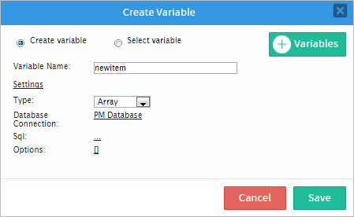
Now that the variable has been created, display the properties of the control by clicking on any space within the control. The properties will be shown in the left hand panel.
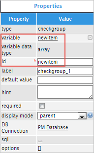
Now, the label property can be changed from "checkgroup_1" to "Item to buy".
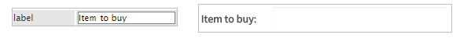
For this control is not advisable to change the default value property because it will not have an effect on this type of control, as seen in the image below.
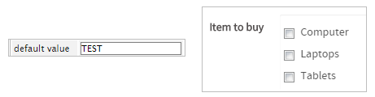
The hint property can be used to show a help message to the user. In this example, the user will choose an item to buy, so add the following text to the hint property: "Check the item(s) for the purchase". When running a case, hover the pointer of the mouse over the icon next to the control and the hint will be displayed, as shown in the image below.
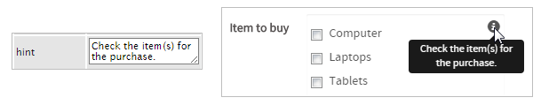
Next is the required property. When/if the required property is checked, a red asterisk will appear next to the control field, which means that an option must be selected or an error message will appear, as observed in the image below.
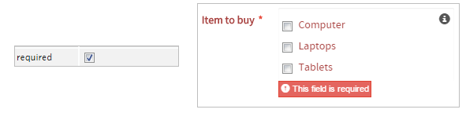
Next is the display mode property, which allows the user to choose the way the control is displayed. If the mouse is hovered over the question mark icon, an explanation of each display mode will be displayed. As seen in the image below, each mode will have the following effects on the control:

The following properties are the DB Connection property, which is used to select between the list of database connections defined in the process objects, and the sql property, which is used to query values from databases. To demonstrate the use of these properties, a different example will be used. Let's pretend a country needs to be chosen; therefore, a query will be used to call the UID and name of a table named ISO_COUNTRY.
Note: The * identifier is not supported in SQL queries.
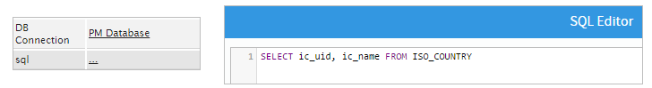
The result of using this query in the control is the following:
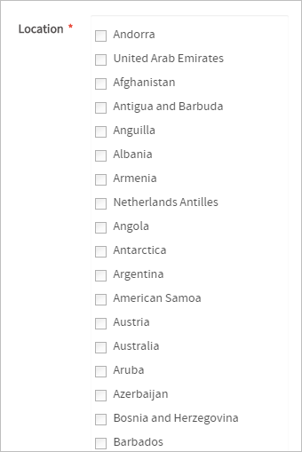
Note: In the image above, the full number of countries is not shown because it is too long to show in one image, but when testing the example the complete list will be shown.
Notice that the options property already has values, this is because the variable associated to the control already has defined values. For more information about the options property, read this documentation
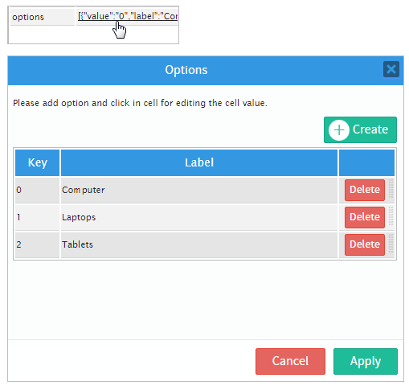
Accessing Checkgroups with PHP
When a checkgroup is submitted, an array variable is created that contains the keys of the selected options in the checkbox. Another variable named @@variable_label is also created, which is a JSON string holding an array of the labels of the selected options.
For example, the following checkgroup is associated with the selectSubjects variable:
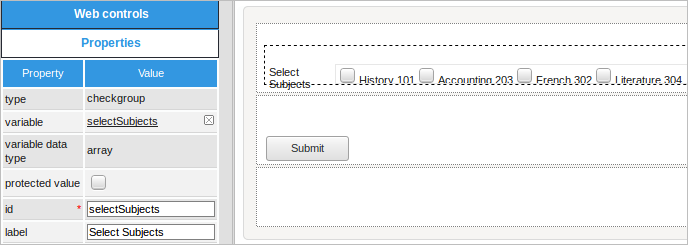
This checkgroup has the following list of options:

If the user selects the following options when running a case:

Then, the following two case variables will be added to the case when the Dynaform holding the checkgroup is submitted:
@@selectSubjects_label = '["History 101","French 302","Literature 304"]';
The checkgroup's array variable needs to be accessed as @=selectSubjects in the trigger code. If it is accessed as @@selectSubjects, then it will be converted into a string, which will cause problems if trying to use it as an array.
An individual item in the array can be accessed as @=selectSubjects[index], where the index starts counting from the number 0. The count() function can be used to get the number of selected items in the checkgroup. If the user might not have submitted the Dynaform or skipped it by using the Steps menu, then it is a good idea to use isset() to first check that the checkgroup's variable was set. Also check that the number of selected items is greater than the index number when accessing the array.
For example, the following trigger code gets the key of the first selected option in the selectSubjects checkgroup:
A for or foreach loop can be used to access all the selected options in a checkgroup.
For example, the following code creates a new case in the "Enroll Student" process for each selected item in the "selectSubjects" checkgroup. The code first looks up the unique IDs of the process and its first task named "Check Eligibility," and then uses the Derivation::getAllUsersFromAnyTask() function to get an array of the users assigned to the "Check Eligibility" task. Then, it loops through the selected options in the "selectSubjects" checkgroup and uses the rand() function to randomly select a user to assign to the new case.
$firstTaskId = PMFGetUidFromText('Check Eligibility', 'TAS_TITLE', $processId, @@SYS_LANG)[0];
$d = new Derivation();
$aUsers = $d->getAllUsersFromAnyTask($firstTaskId);
if (count($aUsers) == 0) {
throw new Exception("No users assigned to task 'Check Eligibility'.");
}
foreach (@=selectSubjects as $subjectKey) {
$random = rand(0, count($aUsers) - 1);
$assignedUserId = $aUsers[$random];
$aVars = array('subjectKey' => $subjectKey);
$newCaseId = PMFNewCase($processId, $assignedUserId, $firstTaskId, $aVars);
if (empty($newCaseId)) {
throw new Exception("Unable to create new case in 'Enroll Student' process.");
}
}
To access the labels of the selected options in the checkgroup, the decode_json() function can to be used to convert the @@selectSubjects_label variable into an array.
For example, the following trigger code checks whether the user selected an option with the label "History 101" or "Literature 304" in the "selectSubjects" checkgroup. If so, then the key of the selected option is added to an array variable named "languageRequirements".
//check if the DynaForm was submitted:
if (isset(@@selectSubjects_label) and !empty(@@selectSubjects_label)) {
$aLabels = json_decode(@@selectSubjects_label);
for ($i = 0; $i < count($aLabels); $i++) {
$label = $aLabels[$i];
$key = @=selectSubjects[$i];
if ($label == 'History 101' or $label == 'Literature 304') {
@=languageRequirements[] = $key;
}
}
}
To set the selected options in a checkgroup, add the keys of the options to the array variable associated with the checkgroup. Make sure that the trigger is set to fire BEFORE the Dynaform that contains the checkgroup.
For example, the following trigger checks if the student is a humanities major before marking the first and third the options in the "selectSubjects" checkgroup, which have the keys 'HIS-101' and 'LIT-304':
Before adding an option to the list of selected options in a checkgroup, first use the in_array() function to check whether the option has already been added.
The following code adds the 'FRE-302' option to the list of selected options in the "selectSubjects" checkgroup:
The unset() function can be used to remove an option from the list of selected options in a checkgroup. Use the array_search() to first find the index of the selected option.
For example, the following trigger code unselects the 'FRE-302' option in the "selectSubjects" checkgroup:
$index = array_search('FRE-302', @=selectSubjects);
if ($index !== false) {
unset(@=selectSubjects[$index]);
}
}
JavaScript in Checkboxes and Checkgroups
To learn how to manipulate Dynaform controls using JavaScript, see JavaScript in DynaForms.
Checkboxes/Checkgroups in ProcessMaker 3 have the following field components:
- Label: The text displayed above or to the left of the field to identify it to the user.
- Text: The text (label) of the checkgroup options, which can configured in the list of options. This text can be configured in checkboxes, but by default it is "true" if marked and "false" if unmarked. For checkgroups (and checkboxes before version 3.0.1.4), the text is a JSON string containing an array of the labels of the marked options. For example, a checkgroup to select countries might have the following text:
'["United States", "Mexico", "Brazil"]' - Value: The stored value (key) of the marked option. For checkboxes, this is a value of "1" if marked and "0" if unmarked. For checkgroups, this is an array of the values (keys) of the marked options. For example, a checkgroup for selecting countries might have a value of:
["US", "MX", "BR"]
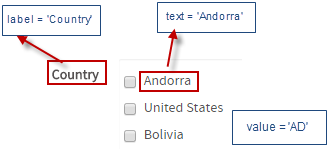
JavaScript Methods
Some of the JavaScript methods used to manipulate checkboxes and checkgroups include:
| Method | Description |
|---|---|
jQuery("#fieldID").getControl() |
Use this function to obtain the control's input field, rather than its DIV, with $("#id").getControl()[2] |
jQuery("#fieldID").disableValidation() |
Disables the validation of the field, so it doesn't check whether the field is required when the form is submitted. |
jQuery("#fieldID").enableValidation() |
Enables the validation of the field, so it will check whether the field is required when the form is submitted. |
jQuery("#fieldID").getValue() |
Returns the value (key).
|
jQuery("#fieldID").getText() |
Returns the text (label). For checkboxes, it returns the label, which by default is "true" if marked and "false" if unmarked. For checkgroups (and checkboxes before version 3.0.14), it returns a JSON string containing an array of the labels of the marked options. |
jQuery("#fieldID").getLabel() |
Returns the field's label, which is the text displayed above or to the left of the field to identify it. |
jQuery("#fieldID").setValue(["value1",
"value2"])
|
Sets the value.
|
jQuery("#fieldID").setText(["label1",
"label2"])
|
Marks the options by using their text label. For a checkbox, set it to the text label of the marked or unmarked
option. Alternatively, to mark a checkbox, set its text to "true", and to unmark it, set its text to "false".
For checkgroups, set it to an array of the labels of the marked options.
For example, a checkgroup to select countries: $("#countries").setText(["United States", "Mexico", "Brazil"])
|
jQuery("#fieldID").setLabel("newLabel")
|
Changes the field's label, which is the text displayed above or to the left of the field to identify it. |
jQuery("#fieldID").setOnchange(function(newVal, oldVal){...}) |
Defines a change event handler, which is a custom function that is executed after the value of the
field changes. The function may contain the following parameters:
|
To see code examples for these methods, see JavaScript Functions and Methods.
Values in Checkboxes
Getting checkbox values:
The value returned by the getValue() method depends upon the version of ProcessMaker. In version 3.1 and later, the value of a checkbox is stored as a string. If the checkbox is marked, then $("#checkbox-id").getValue() returns "1". If unmarked, it returns "0".
In contrast, in version 3.0.1.8 and earlier, $("#checkbox-id").getValue() returned '["1"]' if marked and '["0"]' if unmarked. Take this change into account if upgrading ProcessMaker.
Setting checkbox values:
A checkbox can be marked with either $("#checkbox-id").setValue(["1"]) or $("#checkbox-id").setValue("1"). It can be unmarked with either $("#checkbox-id").setValue(["0"]) or $("#checkbox-id").setValue("0").
Example:
The following JavaScript code marks a checkbox with the ID "hasContract" if the value of "catering_contract" is selected in a dropdown box with the ID "chooseService". If any other value is selected in the dropdown box, then the value of the "hasContract" checkbox is automatically changed to its opposite value; if marked, it is unmarked, or vice-versa.
if (newVal == "catering_contract") {
$("#hasContract").setValue("1");
}
else {
//check for versions 3.0.1.8- and versions 3.1+
if ($("#hasContract").getValue() == '["1"]' || $("#hasContract").getValue() == "1") {
$("#hasContract").setValue("0");
}
else {
$("#hasContract").setValue("1");
}
}
});
Checkboxes in Grids
Getting checkbox values in grids:
In version 3.1 and later, the grid.getValue(row, column) method for a checkbox returns a string. If the checkbox in the grid is marked, then it returns "1". If unmarked, then it returns "0".
In contrast, in version 3.0.1.8 and earlier, the grid.getValue(row, column) method for a checkbox returns ["1"] if marked and ["0"] if unmarked. If upgrading ProcessMaker, then the code should be altered to take this change into account. Also remember that row and column numbers in grids start counting from the number 1.
For example, to check whether a checkbox in the second row in the third column of a grid with the ID "clientList" is checked in version 3.1 and later:
alert("It's checked");
}
Similarly, the value of a checkbox will be "1" or "0" in the array returned by grid.getValue(). Remember to start counting the rows and columns from the number 0 when accessing the array. For example, to check whether a checkbox in the second row in the third column of a grid with the ID "clientList" is checked:
alert("It's checked");
}
Setting checkbox values in grids:
A checkbox in a grid can be marked with grid.setValue("1", row, column) or grid.setValue(["1"], row, column). To unmark a checkbox, use a value of ["0"] or "0". For example, to unmark a checkbox in the third column in the second row of a grid with the ID "clientList":
Likewise, the value of a checkbox can be ["1"], "1", ["0"] or "0" when adding a new row to a grid with the grid.addRow() method. For example, to add a new row to a grid with the ID "clientList" which has two textboxes and a checkbox in each row:
setOnchange() with Checkboxes
The control.setOnchange() method in version 3.0.1.8 reports the value of a checkbox as '["0"]' (unmarked) or '["1"]' (marked). In version 3.1 and later, the control.setOnchange() method reports the value of a checkbox as '"0"' (unmarked) or '"1"' (marked).
Example
In the following JavaScript example, if a checkbox with the ID "hasContract" is marked, a file control with the ID "contractFile" is shown. If unmarked, then the "contractFile" control is hidden.
Displaying Options in a Horizontal List
The options in a checkgroup are displayed as a horizontal list when displayed in Preview Mode or when running a case. For checkgroups that have a large number of options, this can take up a large amount of space and force the user to scroll through a long form. To change from a vertical list of options to a horizontal list, add the "radio-inline" class to the DIVs around each checkbox.
For example, the following checkgroup with the ID "selectCountries" is used to select from a list of countries:
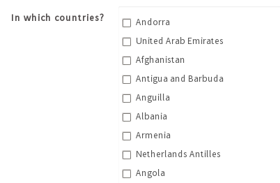This checkgroup takes up less space with a horizontal list of options:
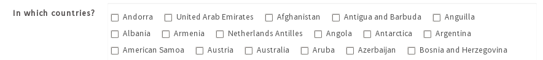
The following JavaScript code can be added to a Dynaform to make the checkgroup with the ID "selectCountries" to display a horizontal list of options:
Remove Shadow Box Around Checkboxes
To remove the light blue shadow box around checkboxes and checkgroups, add the following JavaScript to the Dynaform: